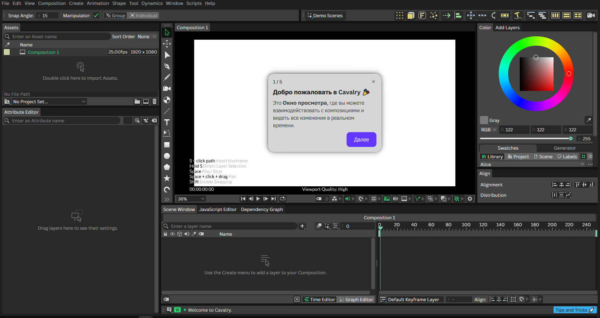
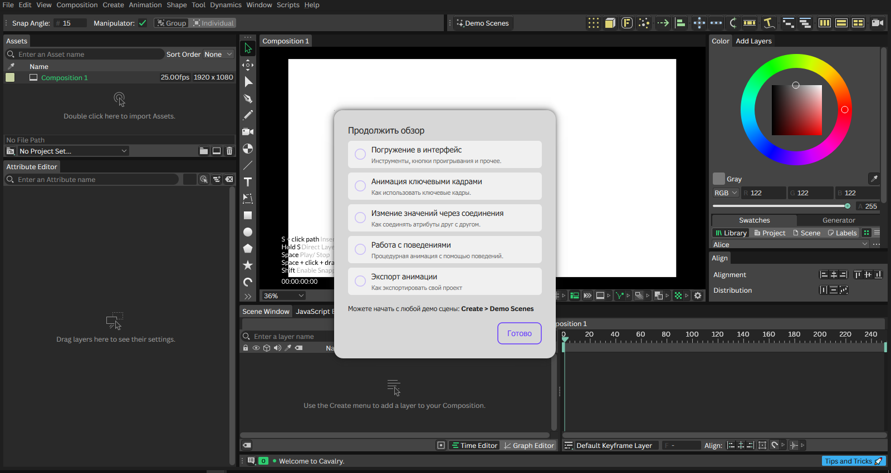
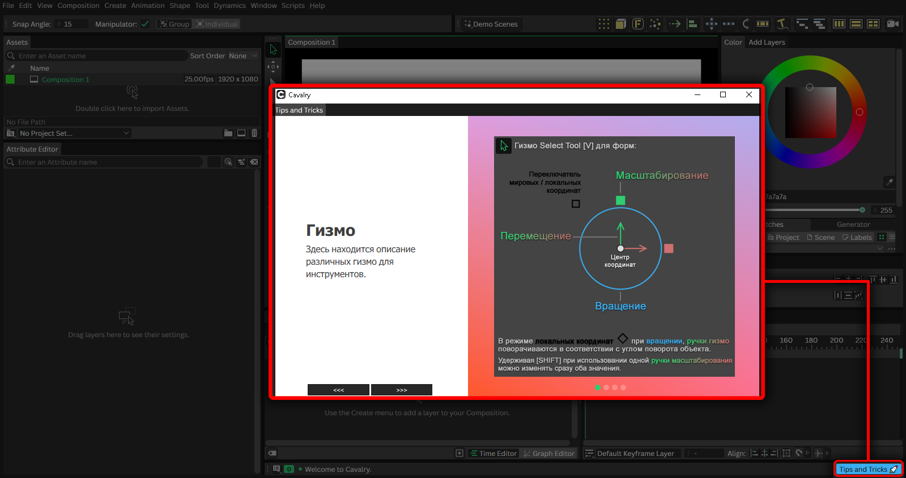
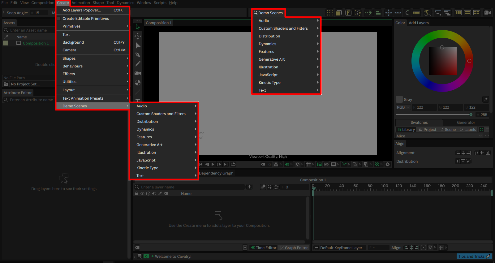

Быстрый старт
Встроенный помощник
При первом запуске программы, активируется встроенный помощник, который проведёт вас по основным областям интерфейса и позволит быстро определиться с основными элементами. Если вы используете ВК версию Cavalry, то всё будет на русском:

После первых пяти шагов, вы сможете пройти дальнейшее обучение.

Встроенный помощник доступен всегда из главного меню Help - Getting Started Guides.
Советы и рекомендации
В самом нижнем правом углу программы находится кнопка Tips and Tricks, нажав на которую вы увидите всплывающее окно с различными подсказками и советами. Если вы используете ВК версию программы, то всё также будет на русском:
По умолчанию все подсказки идут циклично, сменяя друг друга через короткий промежуток времени. Но вы можете в любой момент переключиться на любую подсказку, подведя курсор на один из кружков ● под ней. Он подсветится зелёным и отобразит нужную страницу.
Количество кружков означает количество страниц текущего раздела. Разделы переключаются кнопками <<< и >>>

Окно советов и рекомендаций также всегда доступно через главное меню Help - Tips and Tricks.
Демо-сцены
Когда вы окончите краткое, пошаговое обучение, можете приступить к разбору различных демо-сцен, из которых вы узнаете о продвинутых возможностях программы. Эти сцены доступны всегда из главного меню Create - Demo Scenes, а также из быстрого меню Demo Scenes на полке:

Если вам недостаточно демок, идущих в комплекте с программой, на следующей странице вы можете скачать другие примеры работ.